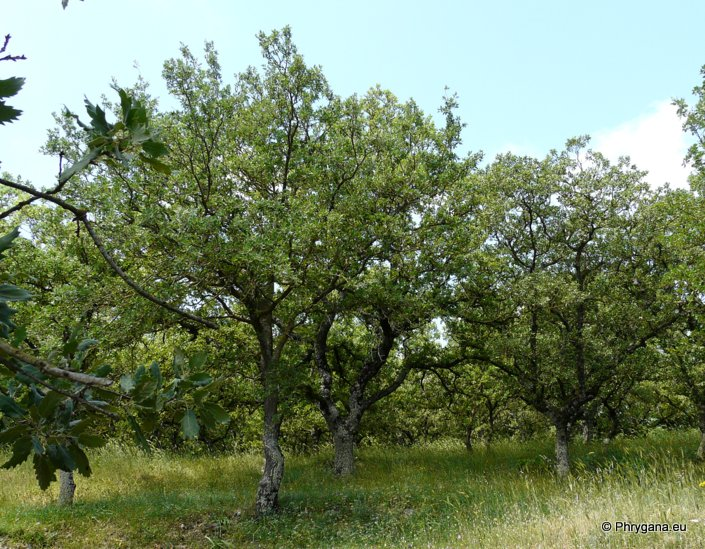
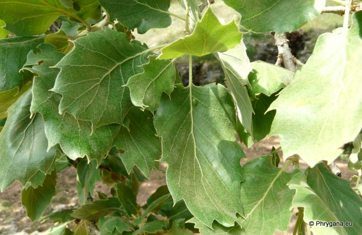

&"
| PHRYGANA | Fauna | Flora | Galles | liste des espèces |
contact -
info - commentaires phrygana1 (at) gmail.com |
| Particularités crétoises | nouveautés | Mines | ressources naturelles |
| Quercus ithaburensis subsp. macrolepis (KOTSCHY) HEDGE & YALT. |
| 419 | Flora | FAGACEAE | Quercus L. |
|
 Quercus ithaburnesis subsp. macrolepis Armeni (Rethymno) 10 mai 2012 |
| (fr) le Chêne de Velani - (en) Valonia Oak | |
| Feuilles: semi-sempervirentes, vert grisâtre, lancéolées_ovales, généralement plates, parfois ondulées, à pétiole tomenteux (15-40 mm), 4-8 paires de lobes triangulaires peu prononcés avec quelques dents; apex pointu | |
| Tige à corce noirâtre, écaillleuse et fendillée; raMeaux pibescents; bourgeon ovoïde | |
| Fleurs: châtons mâles courts, glabres | |
| Fruits: mûrs en deux ans; cupule grande (30 mm), à écailles nombreuses, épaisses et recourbées vers l'extérieur; gland grand (25 - 40 x 20 - 30 mm) | |
| Hauteur: 6 - 15 m | Type biologique: phanérophyte |
| Floraison: avril mai | |
| Altitudes: 0 - 600 m | |
| Statut en Crète: indigène | |
| Biotopes en Crète: maquis, garrigues, forêts, parfois cultivé | |
| Distribution: Italie, Balkans, Proche-Orient, Asie mineure | |
| Note: espèce difficile à cultiver | |
|
 Quercus ithaburnesis subsp. macrolepis Armeni (Rethymno) 10 mai 2012 |
| 15 juin 2013 |
| © paul fontaine -- © Phrygana.eu 2007 -- 2013 |